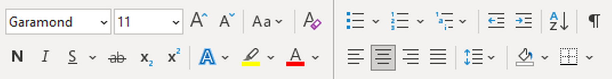
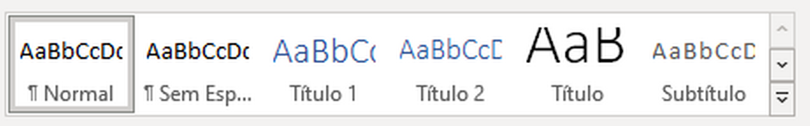

Para nosso primeiro exercício, digite o texto abaixo. Em seguida formataremos, desta vez incluindo tabulações e estilos. Assim que abrir o Word em seu PC ou o Word on-line em Office.com e iniciar um novo arquivo, salve o arquivo com o nome Inteligência Artificial em sua pasta em Documentos ou em sua pasta no Drive. Para usar o Office on-line é preciso estar logado em sua conta Microsoft.
Após terminar de digitar todo o texto inicie a formatação. Abaixo temos as duas barras de formatação, de caractere e de parágrafo, na dúvida é possível parar o mouse sobre um ícone e esperar que seu nome apareça no cursor:
Antes de tudo, selecione todo o texto e aplique uma fonte Garamond, tamanho 11.
Selecione as partes que aplicará o estilo negrito clicando e arrastando, faça o mesmo para os trechos em itálico e o mesmo para aplicar o alinhamento, que no caso do corpo do texto é justificado, e o rodapé com a fonte é alinhado à direita.
Note que cada parágrafo se inicia com um espaço na primeira linha chamado de tabulação, para inseri-lo basta posicionar o mouse antes da primeira letra e apertar a tecla TAB.
Note ainda que no meio do primeiro texto temos dois parágrafos em lista não ordenada, para formatá-los, selecione-os e clique em Marcadores, a primeira opção da Barra de Estilo de Parágrafo.
No meio do segundo texto temos ainda outro tipo de lista, uma lista ordenada com numeração, ou, uma lista numerada. Para isso basta selecionar Numeração ao invés de Marcadores como fizemos anteriormente.
Por último, selecione o primeiro título, e na Barra de Estilos, selecione Titulo 1.
Em seguida altere a fonte para Garamond 14 negrito.
Pareceu estranho aplicar um estilo em seguida alterá-lo? O que fizemos antes é apenas semântico, pois aplicamos um nível hierárquico ao título de forma que depois poderemos construir um sumário. Por exemplo, o Título 2 se torna o subtítulo do Título 1, isso define a posição que aparecerão no sumário quando o inserirmos.
Uma quebra de página é inserida ao segurarmos a tecla Control e pressionarmos Enter, isso faz com que o próximo parágrafo se inicie na página seguinte. É possível ainda inserir uma quebra de página pelo menu Inserir. Clique antes do segundo título do texto e insira uma quebra de página para que cada capítulo fique numa página diferente.
Podemos deixar a formatação dos títulos ainda mais fácil. Clique no título do primeiro texto que você fez anteriormente (o que já estava formatado) e clique com o botão direito do mouse sobre o estilo Título 1 (que você aplicou ao texto) na Barra de Estilos do menu Página Inicial. Selecione a opção "Atualizar Título 1 para corresponder à seleção", você verá que ele se modificará, isso porque apesar de manter a hierarquia semântica do sumário, ele contém agora a formatação que desejamos. Agora basta aplicá-lo aos nossos títulos.
Para inserir a imagem, entre no site pixabay.com e digite Inteligência Artificial, escolha duas imagens que gostar e faça o download. Em seguida crie uma nova linha no texto entre os títulos e os parágrafos para inserir a imagem e, com o cursor posicionado no local, clique no menu Inserir na Barra de Menus, clique em Imagens e selecione Este Dispositivo procure pela imagem e clique em Inserir.
Faça o mesmo processo com a segunda imagem.
Para definir as duas imagens com o mesmo tamanho, clique com o botão direito do mouse sobre a imagem e selecione Tamanho e Posição e defina a largura como 10,0cm, faça o mesmo com as duas imagens.
Nosso próximo passo é criar um sumário com os conteúdos dos títulos. Para isso clique antes da primeira letra no início do arquivo, clique no menu Inserir e selecione Página em Branco. Com o cursor posicionado no começo da página, clique no menu Referências, clique em Sumário e selecione um dos dois tipos de sumário automático. Sempre que alterarmos ou excluirmos títulos ou inserirmos novos, devemos voltar a esse menu e selecionar Atualizar Sumário.
Caso o sumário não tenha adicionado automaticamente os títulos, ainda no menu Referências você pode selecionar os títulos e clicar em Adicionar Texto, e definir o nível hierárquico que aparecerá no sumário, pode ser necessário formatar novamente os títulos.
Outro recurso que vamos inserir em nosso documento é Cabeçalho e Rodapé. Para isso, clique no menu Inserir e procure por Cabeçalho e clique, selecione Em branco. No cabeçalho do documento, digite: Inteligência Artificial, o que é, como funciona e objetivos. Formate o cabeçalho como Garamond 10 negrito centralizado.
Para inserir o Rodapé o processo é o mesmo, selecione Rodapé, Em Branco. A diferença é que ao invés de digitarmos algo, inseriremos um elemento automático.
Na Faixa de Opções procure por “Número de Página” e clique, selecione “Fim da página” e escolha “Numero sem formatação 2”, para que fique centralizado, em seguida selecione o número de página e formate-o como Garamond 14 negrito.
Vamos agora configurar os espaçamentos entre linhas e parágrafos, provavelmente seu texto esteja com os espaçamentos maiores que os da apostila.
Selecione todo o texto do primeiro parágrafo. Você pode clicar e arrastar ou pressionar Control+T.
Na Barra de Estilo de Parágrafo, clique na setinha que aponta para baixo, bem no canto, será aberta a caixa de diálogo Recuos e Espaçamento. Na primeira guia ela tem três conjuntos, Geral, Recuo e Espaçamento, o que nos interessa é o terceiro conjunto, espaçamentos.
Em “Antes”, digite 0, em “Depois” digite 0, e em “Espaçamento entre linhas”, selecione Simples.
Certamente os títulos encostaram nos parágrafos. Basta que você selecione um dos títulos do documento e formate-o novamente, em “Espaçamento entre Linha e Parágrafo”, na Barra de Estilo de Parágrafo, selecione 1,5. Em seguida atualize o estilo de título na Barra de Estilos. Se tiver dúvidas nesta etapa, peça ajuda ao seu instrutor.
Está quase pronto, vamos agora configurar uma cor de fundo para os parágrafos aplicando um estilo de Bordas e Sombreamento.
Selecione todo o texto do documento.
Na Barra de Estilo de Parágrafo, procure por Bordas e clique na seta ao lado, selecione Bordas e Sombreamento, lá no final.
Na caixa que se abrirá, clique na terceira guia, Sombreamento, em Preenchimento, escolha uma cor clara de sua preferência. Veja que se quiser você pode aplicar uma Borda de Página também, sinta-se à vontade.
Terminando tudo, clique em Ok. Salve seu documento.
Vamos agora a uma das etapas fundamentais que é configurar a página, pois não adianta nada fazer um belo documento que no final não é funcional para imprimir ou exportar.
Clique no menu Layout.
Em Margens, selecione Moderada, o que aplica recuos laterais de 1,91cm e superior e inferior de 2,54cm. Você pode configurar margens independentes de acordo com o tipo de impressão que fará com o documento.
A orientação será mantida como Retrato, o que significa que a o conteúdo é impresso com a página “em pé”.
Em tamanho selecione A5, que equivale à metade de uma folha de papel comum, o tamanho A5 é muito usado em livros.
Quando terminamos um documento podemos passar um Corretor Ortográfico para verificar erros de digitação e de concordância, geralmente o Word aponta erros de digitação com marcas vermelhas e de concordância com marcas azuis, enquanto digitamos. Mas é possível depois de tudo pronto dar um tratamento geral nos erros do arquivo.
Clique no menu Revisão. Selecione Ortografia e Gramática. Podemos corrigir ou ignorar uma sugestão do corretor.
Para salvar um arquivo basta pressionar Alt+1. Caso o arquivo esteja salvo previamente será atualizado, senão será solicitado para salvar em um diretório no computador. Para salvar o documento como um novo, selecionamos “Salvar Como”. Na caixa de diálogo de Salvar Como, você pode ver que podemos salvar o arquivo em vários formatos diferentes, como por exemplo .rtf, que é o formato Rich Text, utilizado pelo Wordpad e .txt que é texto sem formatação, utilizado pelo Bloco de Notas.
É claro que salvar em formatos não compatíveis pode resultar em perda de dados. Por exemplo, salvar seu documento agora como .txt fará com que o novo arquivo perca toda a formatação feita, mas o arquivo original permanece desde que tenha sido salvo antes com a opção Salvar.
Vamos salvar num formato diferente?
1. Primeiro, aperte Control+S para atualizar o arquivo original.
2. Agora clique no menu Arquivo, e selecione Salvar Como. Clique em Procurar e navegue até sua pasta.
3. Em Tipo, selecione PDF. E clique em Salvar.
Dica: Pegue o hábito de utilizá-lo com frequência para que o arquivo esteja sempre atualizado.
Feche o Word e abra sua pasta, encontre o arquivo Inteligência Artificial.pdf e abra-o. Está finalizado nosso primeiro exercício.
O Word é um editor de textos completo com diversos recursos de layout e formatação que podemos utilizar em nossos documentos, e incluem:
☛ Formatação de Caracteres.
☛ Formatação de Parágrafos.
☛ Formatação estética e semântica de títulos.
☛ Sumário ou tabela de conteúdo.
☛ Inserção de imagens e outros formatos de arquivos.
☛ Cabeçalho, rodapé e numeração de página.
☛ Margens e colunas.
☛ Revisão de ortografia e gramática.
☛ Dicionários de tradução e de sinônimos.
☛ Exportação em diferentes formatos.
☛ Entre outros recursos.